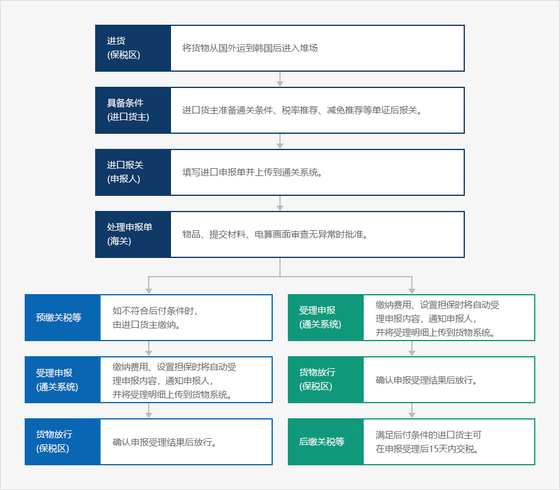
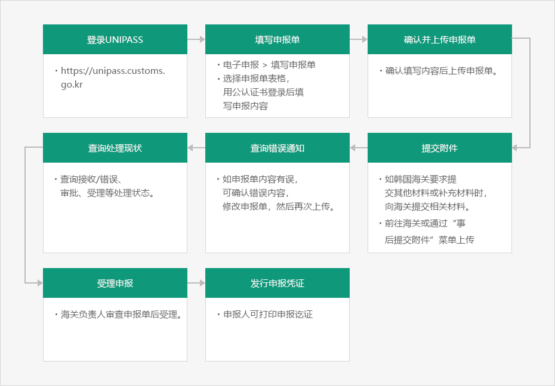

通关程序
- Home
- 经营与生活
- 通关
- 通关程序
通关指按《关税法》规定的流程，出口、进口或退回货物。进口通关是指将向海关关长申报进口货物，在海关关长合法受理并交付进口申报完毕凭证后，运送进口货物等的一系列流程。
相反，出口通关是指向海关申报出口货物后，接受申报受理并将货物装载到运输工具上的流程。运入韩国的货物在未申报进口的情况下退回国外时，称为退货，有关退货的流程称为退货通关。
通关流程
进口通关
进出口或退还货物时，应当向海关关长申报相应货物的品名、规格、数量、价格以及其他相关规定事项。进口申报只能在装载相应物品的船舶（飞机）进港后进行，但需要进口物品快速通关时，可在入港前申报进口。进港前申报的进口货物视为已到达韩国货物。※ 进口报关时期：可选择在船舶（飞机）出港、进港前，入港后物品到达保税区前以及到达保税区后，向海关关长申报进口。
进口申报材料
进口货主需准备形式发票（INVOICE）、提单、包装清单、原产地证书和其他进口条件确认材料，并委托进口申报。受委托的申报人在海关进行通关审查要求提交资料时，应提交材料，如不要求，可自行保管。※ 关税厅正在搭建新的系统，新系统完成后进口申报所需材料可通过电子方式或转化为电子图像化后提交至海关。
进口报关处理
进口货主需准备形式发票（INVOICE）、提单、包装清单、原产地证书和其他进口条件确认材料，并委托进口申报。受委托的申报人在海关进行通关审查要求提交资料时，应提交材料，如不要求，可自行保管。 关税厅正在搭建新的系统，新系统完成后进口申报所需材料可通过电子方式或转化为电子图像化后提交至海关。进口物品检查
进口物品检查是指通过现货检查，确认申报进口的物品是否与进口申报事项一致以及是否违反有关法律法规的规定。检查比率可结合各进口企业遵守法律的程度、检查检举情况和原产地等进行差别化处理。检查方法可根据检查对象物品，采用抽检、全部检查和分析检查等方法。进口物品检查所需费用由进口货主承担。交付进口申报完毕凭证
海关关长受理进口申报后，将以电子方式盖印海关特殊公章，将申报完毕凭证交予报关人。
进口通关程序


- 进货(保税区)
将货物从国外运到韩国后进入堆场。
- 具备条件(进口货主)
进口货主准备通关条件、税率推荐、减免推荐等单证后报关。
- 进口报关(申报人)
填写进口申报单并上传到通关系统。
- 处理申报单（海关）
物品、提交材料、电算画面审查无异常时批准。
- 预缴关税等
如不符合后付条件时，由进口货主缴纳。
- 受理申报（通关系统）
缴纳费用、设置担保时将自动受理申报内容，通知申报人，并将受理明细上传到货物系统。
- 货物放行(保税区)
确认申报受理结果后放行。
- 受理申报（通关系统）
缴纳费用、设置担保时将自动受理申报内容，通知申报人，并将受理明细上传到货物系统。
- 货物放行(保税区)
确认申报受理结果后放行。
- 后缴关税等
满足后付条件的进口货主可在申报受理后15天内交税。
- 预缴关税等

网上通关门户（UNI·PASS)
UNI·PASS在线处理系统，可帮助个人及企业完成进出口所需的海关申报、纳税、申请条件等所有通关程序。
※ UNI·PASS : unipass.customs.go.kr
主要服务
UNI·PASS的主要服务包括电子申报、电子缴费、信息查询及赋予个人通关固定编号。| 服务 | 内容 |
|---|---|
| 电子申报 | 可在办理进出口申报、退税申请等申报业务后查询结果及打印通关材料。 |
| 电子缴费 | 可在申报进口后缴纳关税等税金及查询处理明细。 |
| 信息查询 | 可查询关税行政业务所需的通关信息、合规遵守程度和通关符号等。 |
| 个人通关 固定编号 | 签发及查询个人物品进口申报时使用的个人通关固定编号。 |
申请程序
需在海关的许可下使用UNI·PASS。申请人应向国家认证机构申请并取得公认认证书，通过UNI·PASS注册会员，海关负责人在确认申请人的资格后批准使用。※ 相关规定：《 关于国 家 关 税 综 合 信 息 网 的 使 用 及 运 营 相告 示 》 ( 关 税 告 示 第 2018-25，2018.7.18.)
使用方法
分为两种方法，一种是将内容输入至UNI·PASS提供的申报表填写界面并发送至网页，另一种是申请人使用电脑填写申报表后，通过软件将多项内容一并传送至UNI·PASS。UNI·PASS能够高效处理大量数据或申请件数较多的情况。※ 推荐浏览器：InternetExplorer(IE)、Chrome、Safari、火狐（FireFox）
业务处理结果

- 登录Unipass
- https://unipass.customs.go.kr
- 填写申报单
- 电子申报 > 填写申报单
- 选择申报单表格，用公认证书登录后填写申报内容。
- 确认并上传申报单
- 确认填写内容后上传申报单。
- 查询处理现状
- 查询接收/错误、审批、受理等处理状态。
- 查询错误通知
- 如申报单内容有误，可确认错误内容，修改申报单，然后再次上传。
- 提交附件
- 如韩国海关要求提交其他材料或补充材料时，向海关提交相关材料。
- 前往海关或通过“事后提交附件”菜单上传。
- 受理申报
- 海关负责人审查申报单后受理。
- 发行申报凭证
- 申报人可打印申报讫证